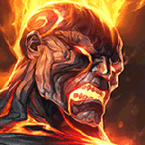
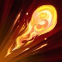
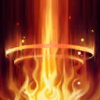
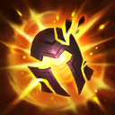

起手裝備
 幽魂之鐮
幽魂之鐮

黎安卓與冰杖讓持續灼燒兼具控場，第三件黑焰補長戰；沙漏占第四購買格，保留任務裝。 五成裝為四件購買裝＋進化任務裝，鞋獨立；三級鞋按經濟補，不把外站附魔搬進本站。


五件成裝與鞋子分開列示；起手與核心是購買路線，不是額外佔用的成裝欄位。鞋子完成時機仍依對線壓力與回城金錢調整。


彗星搭燃燒消耗；凌虐5秒空窗受益，第三列由眼球改殭屍守衛，讓輔助排視野也有成長。


保留閃現＋治療照顧雙人線；只有選角改虛弱、點燃或光盾時才執行相關連招步驟，原條件提示保留。
加點優先：W > Q > E
W > Q > E，開局W/E/Q後主W；Q必須命中已燃燒目標才暈，不能直接當無條件硬控。
技能會使敵人燃燒；疊滿後會在延遲後爆炸，對周圍敵人造成大量魔法傷害。

射出火球造成魔法傷害；若目標已燃燒則暈眩。

在指定區域引發火柱，短暫延遲後造成範圍魔法傷害；燃燒目標承受更多傷害。

點燃目標造成魔法傷害並向附近敵人擴散；燃燒時擴散範圍更大。
釋放火焰在敵人之間多次彈跳，優先利用已燃燒目標製造團戰連鎖傷害。
三層烈炎爆炸與大絕彈跳需要目標靠近；不要為彈回自己而走入必死距離。
3技先掛烈炎 → 1技暈眩目標 → 2技增傷爆發 → 普攻補傷害 → 立刻退回安全位置
三技是最穩定的起手，先燃燒後一技才能暈眩；控制命中後二技幾乎必定命中。
3技擴散燃燒 → 4技在人群間彈跳 → 1技暈眩核心 → 2技覆蓋多人 → 點燃限制回復（改帶時才使用）
大絕在敵人站位密集時價值最高；先掛燃燒可讓後續技能更容易疊滿被動爆炸。 本頁預設為閃現＋治療；本連招的點燃僅限選角時將治療改帶點燃且技能可用時使用。維持預設配置時略過該步。
3技快速掛燃燒 → 1技暈眩突進者 → 2技腳下爆發 → 必要時閃現拉開 → 回到主力後方
面對刺客時不要先手浪費一技；等對方位移結束再以三技接一技反控。
一技命中燃燒目標會暈眩，二技對燃燒目標傷害更高，三技從燃燒目標擴散時範圍更大。先決定想要的附加效果再安排順序。
不必每次都強行繞過前排。對坦克疊滿烈炎後產生的範圍爆炸，同樣能破壞敵方後排站位。
完整連段後布蘭德沒有位移與硬保命技能。連段結束立即後撤，等待下一輪冷卻再重新進場。
用煉獄風暴抓敵方補刀動作消耗，三級後以天火燎原先掛烈炎，再接火焰烙印暈眩與二技增傷。技能全數進入冷卻時非常脆弱，連段結束立即回到兵線或射手後方；面對鉤子英雄時保留一技處理近身目標。
黎安卓的折磨 → 瑞萊的冰晶節杖 → 黑焰火炬 → 中婭沙漏。黎安卓與冰杖讓持續灼燒兼具控場，第三件黑焰補長戰；沙漏占第四購買格，保留任務裝。 黯霧之鐮由起手任務裝進化，保留占位；二級鞋依對線補，三級鞋不延後必要功能裝。
站在主力後方等待隊友先手控制，再把技能完整疊在敵方密集區。大絕可在敵人與自己之間彈跳，但不要為了增加彈跳次數走進危險距離；一技優先留給突進者或已燃燒的關鍵目標。
枷蘿與卡瑪能在外圍消耗，派克可抓技能空窗；配燼、路西恩或凱特琳接已燃燒Q暈眩。
對局名單是機制與分路判斷，不代表固定勝率；需同時看雙方熟練度、兵線與陣容。
枷蘿與卡瑪能在外圍消耗，派克可抓技能空窗；配燼、路西恩或凱特琳接已燃燒Q暈眩。
威脅名單是攻略與技能互動，實際需看雙方射手、技能冷卻和兵線；不代表台服勝率排名。
完整成裝為四件購買裝＋一件進化任務裝；鞋獨立。以下以本頁預設為基準，變體需重新檢查同名裝及功能缺口。
依陣容
觸發：多名敵人持續獲得高量護盾。
中婭沙漏 → 水仙三叉戟
多名敵人持續獲得高量護盾。
海洋三叉戟由技能命中壓低護盾收益，替換末格前確認原穿透或保命是否仍必要。
換掉原功能前先確認隊友能補足；替換不是第六件成裝。
依陣容
觸發：敵方回復讓消耗與集火失效。
中婭沙漏 → 黑魔禁書
敵方回復讓消耗與集火失效。
黑魔禁書提供重創；由能持續命中的人負責，不跟點燃疊加計算。
換掉原功能前先確認隊友能補足；替換不是第六件成裝。
依陣容
觸發：刺客威脅大，隊友能接應凝滯結束位置。
預設已包含中婭沙漏，保留並依威脅提前，不再買第二件。
換掉原功能前先確認隊友能補足；替換不是第六件成裝。
依對線
觸發：敵方物理普攻是主要威脅，可犧牲部分輸出／技能加速。
魔力之靴 → 鍍板鋼蓋
整條鞋線一起替換；先二級鞋，三級視經濟補。
不買第二雙鞋；主動裝仍占裝備格，不搬外站附魔。
魔法使之鞋 → 裝甲戰靴
整條鞋線一起替換；先二級鞋，三級視經濟補。
不買第二雙鞋；主動裝仍占裝備格，不搬外站附魔。
韌性不能縮短擊飛等所有控制。
7.3c差異核對：7.3c直接平衡項目屬符文大亂鬥；本頁保留已核對的峽谷配置。版本更新不等於每位英雄都必須更換Tier或裝備。查看整輪校正範圍。
本頁校正版本：7.3c；校正日期：2026-10-25。
參考來源標示版本：7.3c
本輪核對官方版本差異、道具/符文引用、五成裝與鞋線、逐級加點及情境替換一致性。Tier及玩法屬本站編輯判斷，不是官方排名或台服勝率；未公開的全級技能表不推算。
評級理由：7.3c 維持 B（本站判斷）。維持輔助B，不套中路A；傷害高但沒有穩定護盾、位移或即時保排。 7.3c 未改動此分路的英雄數值，沒有新證據只因版本號而升降。
Riot 官方資料 ↗ · Riot 官方資料 ↗ · Riot 官方資料 ↗ · Riot 官方資料 ↗ · Riot 官方資料 ↗ · WildRiftFire 參考攻略 ↗
7.3c 的直接英雄倍率改動屬符文大亂鬥；本召喚峽谷配置承接 7.3b。未把模式專屬增削轉為峽谷增削。
五件成裝、獨立鞋線、起手、核心、情境替換引用與一般符文列別均重新檢查；移除裝備不列入當前推薦。